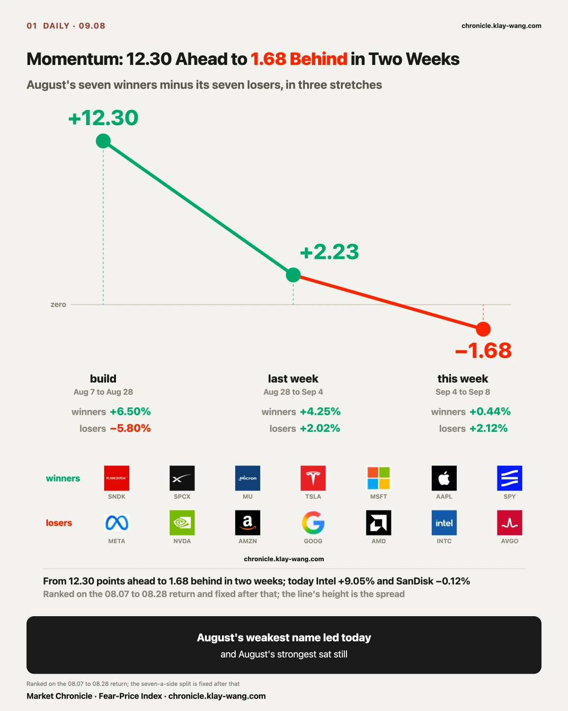
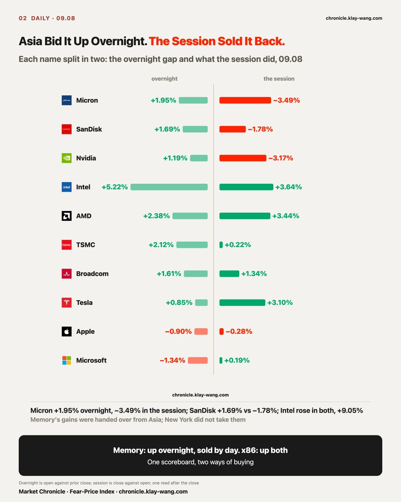
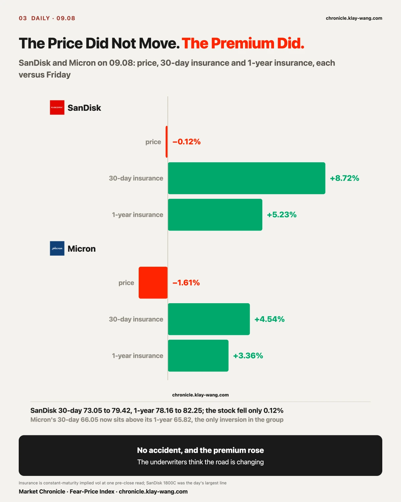
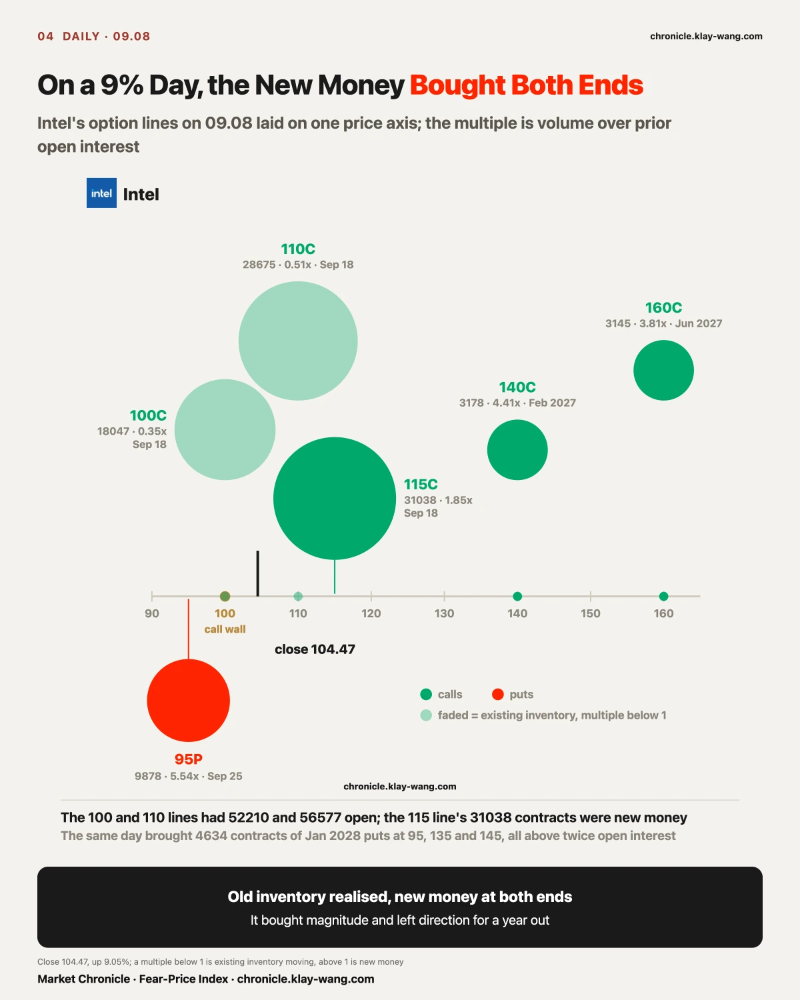
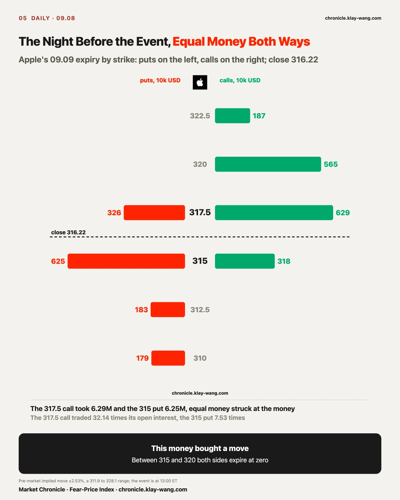
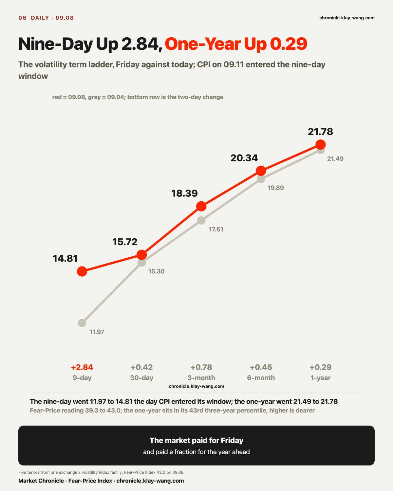
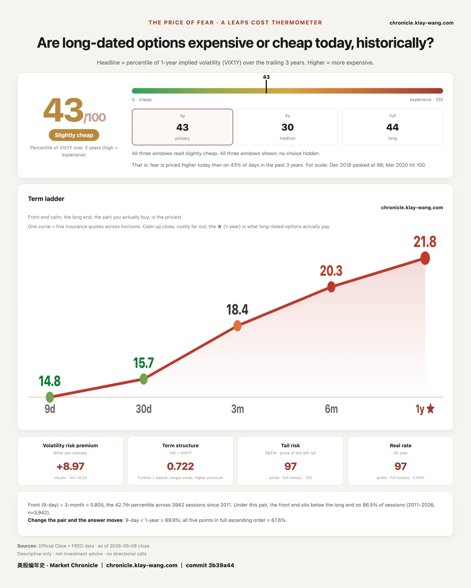

The earnings are fine and the hardware will not move. That impression is correct, and today's tape shows why. The reason is not in the earnings.
One day, one sector, two directions. The eight semiconductor names averaged +2.17%, with Intel +9.05% and AMD +5.90% against Nvidia −2.01%, Micron −1.61% and SanDisk −0.12%. The six software and platform names averaged −0.77%, Microsoft −1.15% and Palantir −2.31%. The indexes did nothing: the S&P 500 −0.55%, the Nasdaq-100 −0.08%, twenty-year-plus Treasuries −0.01%, VIX at 15.72.
Memory's gains were handed over from Asia and New York did not take them. Micron gapped up 1.95% and lost 3.49% in the session; SanDisk gapped 1.69% and lost 1.78%; Nvidia gapped 1.19% and lost 3.17%.
This issue is about the mechanism: a large share of the money setting prices right now comes from momentum, and momentum is stuck mid-shift.

Shorting is easy and common in this market, so long-short books are the norm. Inside one technology pool two opposite sets of positions usually sit at once: the long-horizon book leans long semiconductors and cloud and short software; the short-horizon book runs the other way, selling chips and buying software and the newer cloud names.
While both books are live, a change in style makes the leaders drop and the laggards jump. It looks like something broke in the fundamentals. What is actually happening is money moving from one side to the other. And through the switching, momentum itself cannot build, which is how Nvidia posts strong earnings while the whole semiconductor complex refuses to move. The missing ingredient is momentum, not results.
So momentum money is what prices this awkward tape, and fundamental money is not. Reading what comes next starts with reading where momentum is.

That claim can be measured. Rank the twenty-one names by their 08.07 to 08.28 return. The top seven are the winners (SanDisk, SpaceX, Micron, Tesla, Microsoft, Apple, SPY); the bottom seven the losers (Meta, Nvidia, Amazon, Alphabet, AMD, Intel, Broadcom). Winners minus losers is the engine's speed:
From 12.30 ahead to 1.68 behind in two weeks. Intel up 9.05% today while SanDisk fell 0.12% is what that gearshift looks like: August's weakest name leads and August's strongest sits still.
July's momentum shock is still in the frame; AI hardware sold off hard then. Historically, once the momentum factor rolls over against the S&P 500 it usually takes several months of chop and turnover before it leads again, and rarely restarts inside a month. July was two months ago, so this stretch of back and forth is what the pattern looks like.

Momentum books are running small, with little borrowed money behind them, and index volatility is low, with VIX at 15.72. Two reasons, both visible on the tape.
First, September carries its own noise. CPI lands Friday and the FOMC meets Tuesday and Wednesday next week. Nine-day insurance rose 2.84 points in one session today while the one-year rose 0.29, and calls took 78% of the premium expiring on CPI day. The money is paying for the next ten days of movement. Nobody is paying for the direction a year out. Before the data, the cost of adding is certain and the payoff is not.
Second, July's shock has not finished clearing. The momentum trade took a visible hit in July, and recovery runs through turnover, not through time alone.
The premium makes the point plainly. Not one of twenty-nine tickers saw its 30-day insurance cheapen today; the average rose 2.55 points, with Intel +6.76, Marvell +6.79, SanDisk +6.37, AMD +4.87, and on the software side Microsoft +2.28, Alphabet +2.57, Meta +3.19. Winners and losers repriced together. Fundamental pricing would split them by direction; repricing together says the underwriters expect larger moves without deciding who is right.
The Intel section takes this down to the contract: old inventory realised, new money on a call struck 53% above and a put struck 9% below. It bought magnitude and nobody bought a direction. That is what the ledger looks like mid-rotation.

Morgan Stanley's chief US equity strategist Mike Wilson wrote today that momentum has the conditions to restart but the leadership will change. He framed the recent pullback in momentum names as the cycle moving from early to mid stage and the market's main line moving from AI infrastructure suppliers to AI application companies. He does not read it as a simple reallocation. He named software, financial services, insurance and healthcare as the likelier leaders.
Our tables show the opposite in recent form. Over two weeks the semiconductor ETF is +4.93% and the software ETF −0.20% (up 7.35% in the first week, down 6.66% in the second), small-cap software −1.72%, financials −1.58% and healthcare −4.33%. None of the four sectors he named rose over those two weeks.
One reading does sit on his side, and only one. Take insurance out to two weeks: semiconductor 30-day implied volatility fell 0.97 points on average while software rose 1.38. Chips are rising on cheaper insurance, which is how a market prices a continuation and not an event; software is falling on dearer insurance, which is somebody paying ahead of a move. Turns usually begin with the insurance and only later show up in the price. Software is parked on that first step.
The money is in semiconductors, and the number of people insuring software is growing. Both hold at once. They describe two different moments of the same gearshift.

Macro sets the ceiling on valuation. Whether September brings a hike, and whether the front and long ends of the curve steady, determines the discount rate under every asset. MOVE went from 73.10 to 76.14 today, its three-year percentile from 17.9 to 24.1, still in the cheapest quarter.
AI revenue sets confidence. TSMC, ASML, Alphabet, Microsoft and Amazon report through late September, and that is the real test of demand.
Hardware delivery sets the main line. Micron reports on 09.30, inside the 30-day window; its near-dated insurance at 66.05 now sits above its one-year at 65.82, the only inversion among the twenty-one. The market is paying for a date, and the date is 09.30.
When the market accelerates depends on when momentum comes back. The timeline is plain: CPI Friday, the FOMC on Tuesday and Wednesday next week, then the midterm calendar and that run of earnings in late September. Markets chop through a data-testing window; once macro pressure eases and the fundamentals hold, risk gets added back, and momentum money is the most direct buyer.
The opportunity usually sits in the middle of that, not at either end.

SanDisk closed 1737.99, down 0.12%. Its 30-day implied volatility was 73.05 on Friday and 79.42 today, up 6.37 points. Its one-year went from 78.16 to 82.25, up 4.09. Micron's 30-day went from 63.18 to 66.05, its one-year from 63.68 to 65.82.
The price sat still. The premium rose.
On 08.21 this letter used a car-insurance frame: the accident happened and the premium did not rise, so the underwriters had decided that week was an accident and not a change in the road. Today is the reverse sentence. No accident, and the premium rose. The people who sell insurance for a living raised the price of SanDisk's next thirty days and next year on a day the stock went nowhere. On their ledger the road is changing. They do not say which way. They charge for it.
The money sits where that reading says it should. The single largest line of the day by premium was SanDisk's 1800 call expiring 09.18: 2621 contracts, 18.84 million, struck 3.6% above the close. Micron's 1100 call expiring 09.18 took 4335 contracts and 5.53 million; its 1020 call 2593 contracts and 9.23 million. Puts on that expiry were thin; SanDisk's 1510 put traded 694 contracts for 0.87 million.
Micron has a shape of its own today. Its 30-day implied volatility is 66.05 and its one-year 65.82: the near end is 0.23 above the far end. It is the only name in the group of twenty-one where that holds. Micron reports on 09.30, inside the 30-day window. On Friday the curve was not inverted. Today it is. The near stretch costs more than the far stretch. The market is paying for a date, and the date is 09.30.
The other side is on the table too. A Sina piece on SanDisk lays out the risks: two thirds of last quarter's growth came from price, TrendForce sees third-quarter NAND contract prices up only 10% to 15%, SanDisk's consumer business fell 32% quarter on quarter, Samsung and SK Hynix have roughly 518 billion dollars of new Korean capacity coming, and SanDisk's share has not moved in five quarters. Nomura and the Apple contract are the bull case; that piece is the bear case. Our ruler gives one reading: what rose today was the premium, not the price. Whether that reading lands on one side or the other depends on the next few sessions, and the test is written at the end.

Intel closed 104.47, up 9.05%, 26.6% below its 52-week high of 142.35. Two headlines: Digitimes reported another 10% price increase on PC processors in October, and Northland upgraded the stock to Buy with a 120 target, citing a server CPU shortage and Musk's Terafab project.
On the options ledger, Intel's call premium today was 59.72 million and its put premium 4.81 million: 93% calls. That ratio looks one-sided. Split it into three layers.
First layer: the calls expiring 09.18 were mostly old positions moving. The 100 call traded 18047 contracts against 52210 already open, 0.35 times. The 110 call traded 28675 against 56577 open, 0.51 times. Those two lines took 21.6 million of premium today, and it was existing inventory changing hands. The new money was in the 115 call: 31038 contracts, 1.85 times open interest, struck 10% above the close, 5.3 million paid.
Second layer: puts came in too, and they came in near. The 95 put expiring 09.25 traded 9878 contracts, 5.54 times open interest, struck 9% below the close. The 100 put expiring 09.16 traded 3361 contracts, 29.74 times. On a 9% up day someone paid for a return to 95.
Third layer: a year out, both sides. The 140 call expiring February 2027 traded 3178 contracts, 4.41 times, struck 34% above. The 160 call expiring June 2027 traded 3145 contracts, 3.81 times, 53% above. At the same time the January 2028 puts at 95, 135 and 145 traded 2253, 1517 and 864 contracts, all above twice open interest, 4634 contracts in total.
Put the layers together: old inventory is being realised, new money is on both ends. On the day the stock rose 9%, the fresh flow bought a large move and left the direction for a year from now. Thirty-day implied volatility rose from 57.79 to 64.55 and one-year from 62.89 to 66.50. Both ends got dearer.
Friday's pre-market read had the call wall at 100. Intel closed 4.47 above it. The wall was crossed. Whether it holds 100 tomorrow is in the tests at the end.
AMD is the same day in a different key. It rose 5.90% to 505.74. On the long-dated ledger, the 650 call expiring February 2027 traded 3236 contracts, 12.17 times open interest; the 720 call 1518 contracts, 9.86 times; the 420 put on the same expiry 3213 contracts, 8.57 times; the 520 put expiring January 2028 2507 contracts, 16.39 times. In percentages: the top at +28% and +42%, the floor at −17%. Somebody boxed AMD's range through February 2027 from both sides. Northland said the same day that AMD's 2027 data-center revenue would come in below consensus. The ledger did not pick a side. It bought both.
Apple holds its fall event tomorrow, 09.09, at 13:00 ET. It closed 316.22 today, down 1.17%.
On the 09.09 expiry the largest call was the 317.5: 24652 contracts, 32.14 times open interest, 6.29 million in premium. The largest put was the 315: 24901 contracts, 7.53 times, 6.25 million. The two numbers are nearly identical. Further out, the 320 call traded 34055 contracts for 5.65 million, the 317.5 put 3.26 million, the 310 put 1.79 million.
The pre-market implied move for tomorrow was plus or minus 8.09, about 2.53%, a range of 311.9 to 328.1. Equal money on both sides, struck at the money: this flow bought a move and nobody bought a direction. If tomorrow closes between 315 and 320, both sides expire worthless. Only outside that range does one side win.
The layer after the event has been paid for as well. On the 09.11 expiry, the 320 call traded 20149 contracts, the 330 call 18795, the 317.5 call 10989 at 11.64 times open interest. Friday also carried a February 2027 call struck at 600, 4654 contracts, 87% above the price. Apple's 30-day implied volatility rose from 24.99 to 26.35 today and its one-year from 28.39 to 28.88.
The reported NAND contract will be repeated tomorrow. It is a single-source report and Apple has not confirmed it. What the ledger shows is that insurance on Apple rose 5% today and insurance on SanDisk rose 9%.
CPI lands Friday, 09.11. Today it entered the nine-day window, and the front of the term ladder lifted: nine-day from 11.97 to 14.81, up 2.84; thirty-day 15.30 to 15.72; three-month 17.61 to 18.39; six-month 19.89 to 20.34; one-year 21.49 to 21.78, up 0.29. The Fear-Price Index moved from 39.3 to 43.0.
Last Wednesday this letter logged a case: payrolls were not marked up, the year ahead was. The shape has changed. The near end caught up by 2.84 and the one-year followed by 0.29. The market paid for Friday and paid a fraction for the year ahead. The case settles tomorrow on the 09.09 close, with the test unchanged.
Money on the CPI-day expiry still leans up. On the 09.11 expiry, call premium was 18.9 million and put premium 5.2 million, 78% calls. Friday it was 79%. Two sessions later the side has not changed.
Rates insurance lifted a little. MOVE went from 73.10 to 76.14, its three-year percentile from 17.9 to 24.1, still in the cheapest quarter. One-year insurance on high-yield credit rose from 11.59 to 12.58. Long Treasuries closed down 0.01% on a day the headlines were full of twenty-year-high yields. The bond price did not move. The price of insuring it moved a little.
The yen rose 1.51%, the largest move of any asset today. Gold fell 1.73%, crude rose 2.86%, healthcare fell 2.51%. The indexes sat near minus half a percent. Everything that moved was outside them.
Alphabet class A closed 338.36, down 0.03%, invisible on the scoreboard. On the near-month ledger it was the largest line of the day: the 370 call expiring November 20 traded 28200 contracts, 12.33 times open interest, and the 440 call on the same expiry 27612 contracts, 40.25 times.
Nearly equal size, one expiry, one strike 9.4% above the price and the other 30% above. That is a spread: long 370 against short 440, or the reverse. Either way the window is before November 20, and third-quarter earnings in late October fall inside it. A stock that did not move had someone pay for the stretch after its earnings, with the ceiling drawn at 440.
On 09.03 this letter logged a case: the at-the-money puts on Meta expiring 09.04 were insurance on the payrolls print, not a view on the company. The test was written down: if Meta closed quietly near 610 and those puts expired worthless, the judgment would be downgraded to unattributable.
The 09.04 result: Meta closed 616.77, up 1.00%, with a range of 605.27 to 617.46, a 1.99% swing against a pre-market implied move of 3.3%. The 610 put finished at 0.06, the 612.5 at 0.24, the 615 at 0.91, all close to zero. The money that arrived that day switched sides: the 612.5 call traded 42964 contracts, 23.31 times open interest, 13.74 million; the 610 call 19.42 million; the 615 call 63365 contracts.
By the case's own condition, it is downgraded to unattributable. Those puts bought payrolls day; payrolls came and the stock did not move, so the insurance expired at zero. Within two sessions the money on one expiry changed sides, and the side that arrived on 09.04 won. Same shape as Friday's Tesla section: the money that came first and the money that was bigger did not have the edge.
No trade advice. Today's prices, converted into things you can judge yourself.
If you hold memory: the price did not move today, the insurance did. Micron's near end is now dearer than its one-year and its 09.30 earnings sit inside the window. Holding through earnings means paying the dearer insurance; acting before it means today's price is 5% to 9% above Friday's.
If you hold Intel or AMD: Intel crossed the 100 wall today and the new money is on both sides. Both names will move widely tomorrow and nobody has paid for a direction. On AMD someone boxed February 2027 between 420 and 650; where your position sits inside that box is arithmetic.
If you hold Apple: the event is tomorrow at 13:00 ET and the options-implied move is plus or minus 2.53%. A close between 315 and 320 sends both sides to zero; only outside that range does one side win. The stock fell 1.17% the day before, so the market moved its expectation down a notch first.
If you hold nothing and are waiting for an entry: nine-day insurance rose 2.84, one-year insurance rose 0.29. Ahead of Friday's CPI the market raised the price of the short end and left the long end almost untouched. The cheap stretch is the year; the stretch getting dear is this week.
August's weakest name, Intel, rose 9.05% today while August's strongest, SanDisk, fell 0.12%. The momentum spread went from 12.30 points ahead to 1.68 behind in two weeks, and that is what a gearshift looks like on the tape.
Not one of twenty-nine tickers saw its 30-day insurance cheapen today; the average rose 2.55 points. Winners and losers repriced together, so the underwriters expect larger moves without deciding who is right.
Nine-day insurance rose 2.84 points in a session and the one-year rose 0.29. The money is paying for the next ten days. Nobody is paying for the direction a year out.
Whether Micron's two long-dated calls from Friday stayed. The 1900 call expiring December 2027 traded 534 contracts and the 2390 call expiring June 2028 traded 518. Test: if 09.09 pre-market open interest is up by more than half those volumes, they stayed; if not, it was same-day traffic. Long-dated table, 09.09 round only. Last day to read it is 09.09 pre-market; after that it cannot be recovered.
Whether Intel holds 100. It closed 104.47 with the call wall at 100. Test: if the 09.09 close is above 100 and open interest in the 09.18 100 call falls from today, old inventory is being realised and the wall is moving up; if it closes below 100, the 31038 contracts in the 115 call were chasing. Short-dated EOD round and the pre-market structure read only.
Apple's 09.09 close. Test: between 315 and 320, both sides expire worthless and the money bought a move that did not come; outside the range, record which side won and what it paid. Daily close and the short-dated EOD round only.
The five-tenor case from 09.03 settles. Today the nine-day is 14.81 and the one-year 21.78. Test: if the 09.09 close puts the one-year back below 21.5 while the near end keeps rising, the reading that the year ahead was marked up is void; if the one-year holds above 21.7, it stands but must be rewritten as both ends rising. Term ladder from leaps_gauge only.
Whether SanDisk's repricing lasts a day. Thirty-day at 79.42 today. Test: if it falls below 75 before 09.11, today was a post-holiday catch-up; if it holds above 78, the underwriters really repriced. Constant-maturity 15:45 read only.
Tesla's 360 put expiring 09.09. Friday bought 26469 contracts at 9.55, 25.28 million. Tesla closed 368.16 today. Test: a close above 360 tomorrow sends the whole line to zero; below it, record what it is worth. Daily close only.
My fear thermometer measures one thing: how much the market pays, right now, to insure the next year. The dearer the insurance, the more afraid the market is.
Today's reading is 43.0 out of 100: this insurance is dearer than it was on 57% of days in the past three years. Friday it was 39.3.
Why it matters to you: everyone is waiting for Friday's CPI, and so is the market. Insuring the next nine days got 2.84 points dearer in one session; insuring the next year got 0.29 dearer. Short-term fear found a buyer; long-term fear barely moved. If you are preparing for Friday, you are paying this week's marked-up price. If you are looking a year out, today hardly changed the bill.
Fear-Price Index (chronicle.klay-wang.com) · Sep 8, 2026 · 43.0/100: one-year implied volatility (VIX1Y) at 21.78, in the 43.0th percentile of the past three years; higher means dearer. Daily ledger and method → chronicle.klay-wang.com · Attribution: Fear-Price Index · chronicle.klay-wang.com